コマ図メーカー
リエゾン練習用のコマ図を自動で作る デモ
seraphixjp.github.io/komazu
デモを再生（約2分）
住所の入力 → 経路づくり → コマ図の完成 までを自動で操作します。経路はその場でネットから作ります。
コマ図メーカー
スタートとゴールを入れるだけで、国内ラリーのリエゾンと同じ書式のコマ図（ロードブック）を作ります。ラリーの練習や、ラリーコンピューターのテストに。
一時停止
次へ ▶▶
最初から
自分で触る